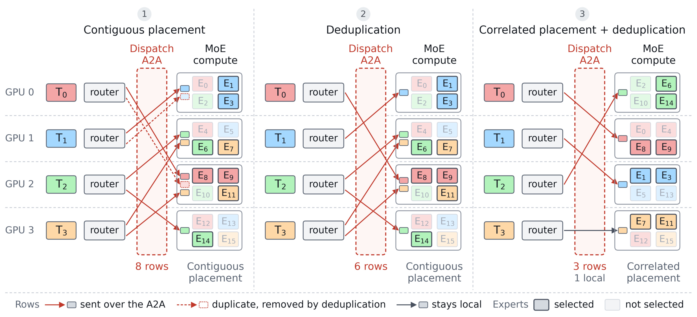
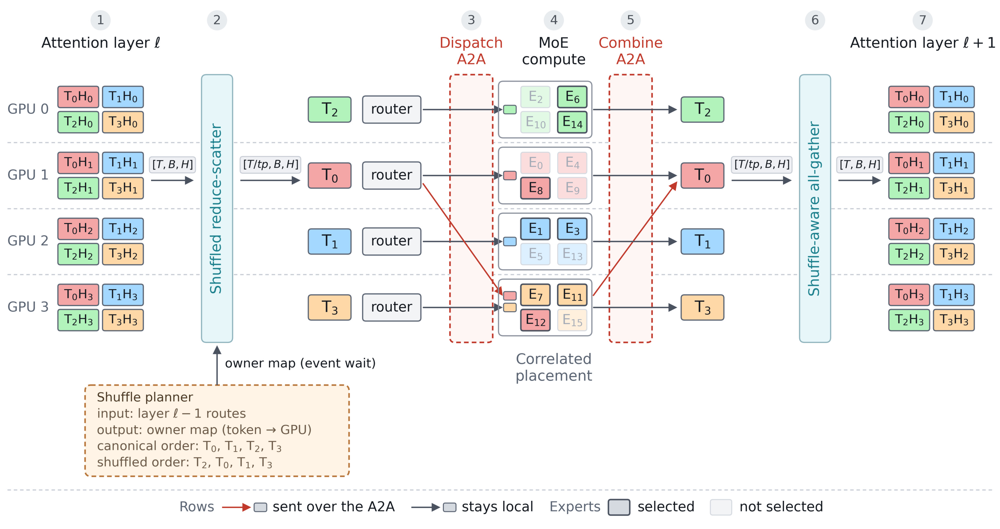
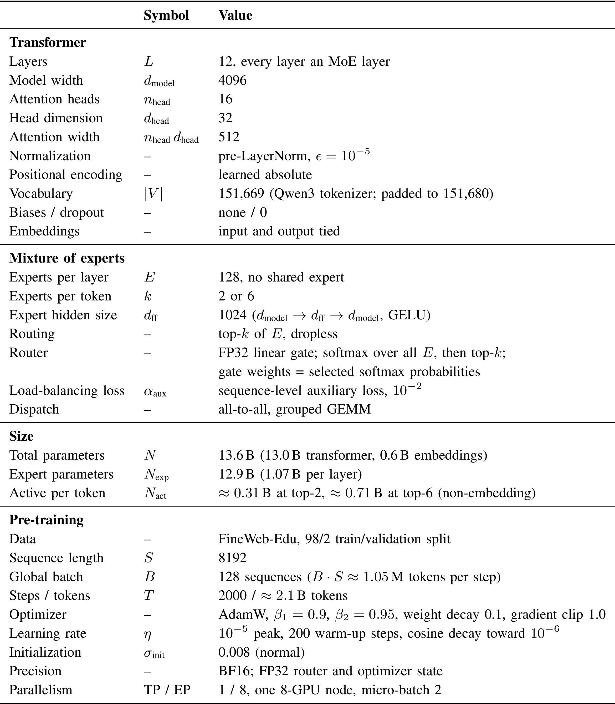
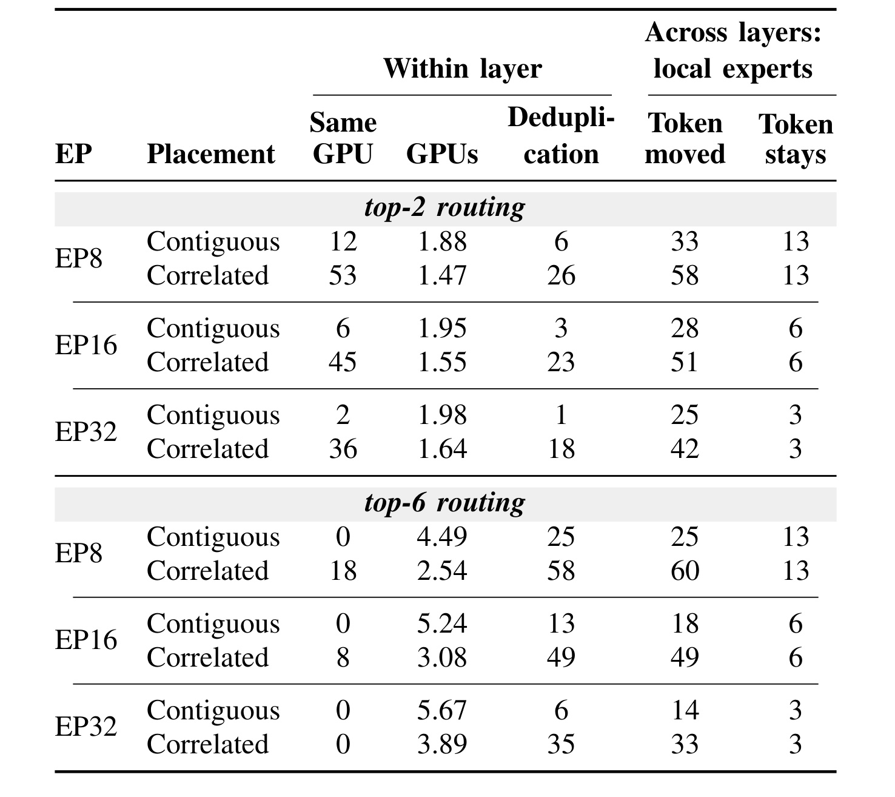
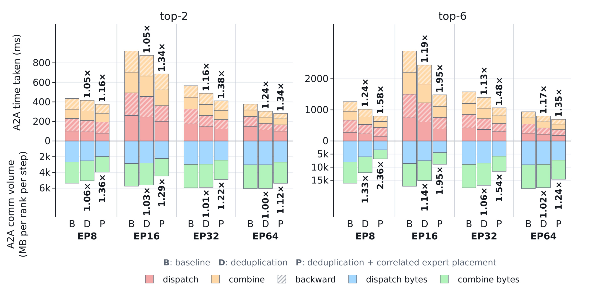
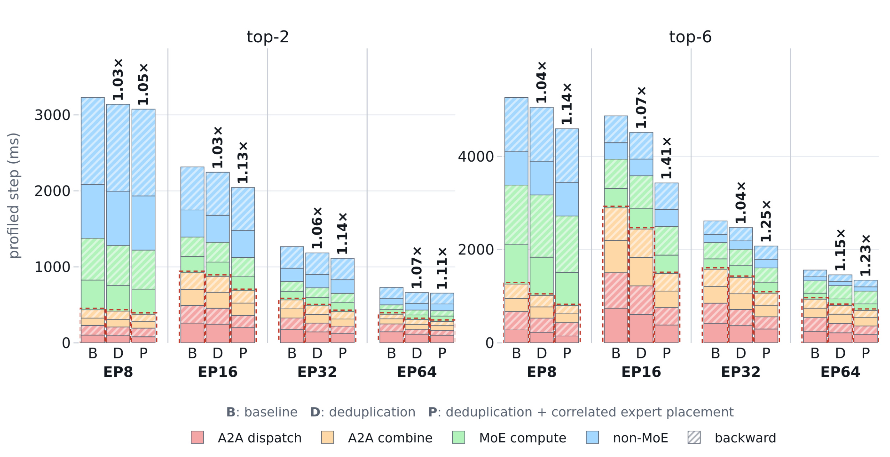
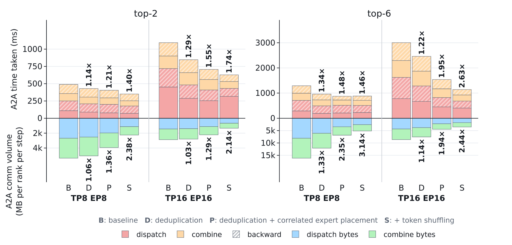
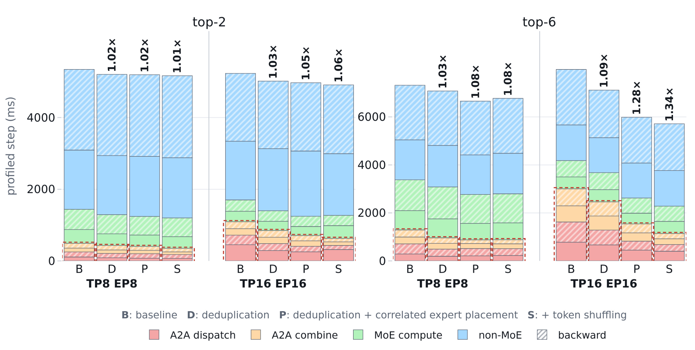
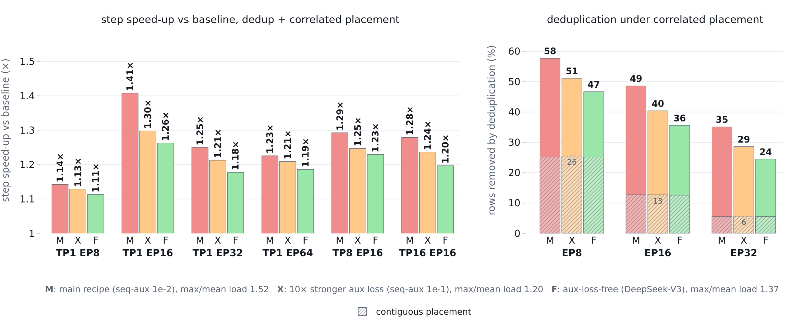

Expert Coupling：利用专家相关性降低 MoE 预训练通信
Radha Gulhane、Quentin Anthony 与 Beren Millidge 均来自 Zyphra。论文《Expert Coupling in MoE Pretraining: Reducing All-to-All Overhead with Correlated Placement and Token Shuffling》于 2026 年 10 月 7 日提交 arXiv v1，属于大模型分布式预训练系统研究。论文入口核验于 2026 年 10 月 8 日；未核验到独立开源代码或项目页。以下根据完整主文与附录解读。本文优化的是专家放置、激活通信与序列所有权，不修改路由器选择、专家权重或训练目标。
MoE 通过稀疏专家扩大容量，但专家并行中的分发与合并通信可占训练步的近一半甚至六成。预训练早期已经形成层内共选和跨层路由相关性，传统连续专家放置却忽视这些结构；训练中的 token 又受注意力序列分片约束，不能直接套用推理中的自由迁移。
1. 背景和问题
1.1 稀疏计算为什么仍然被通信拖慢
MoE 把 Transformer 中单个前馈网络替换为一组专家网络。路由器根据 token 的隐藏状态为所有专家评分，取分数最高的少数专家分别计算，再按门控权重合并输出。总专家数量控制模型容量，实际参与计算的专家数量控制每个 token 的计算量。这个结构节省了稠密激活所需的算力，却没有自动解决激活要到哪里计算的问题：专家参数如果分散在不同设备，隐藏状态必须送到选中的专家所在设备，然后把计算结果送回拥有这个 token 的设备。
论文使用专家并行将每层的一百二十八个专家分散到多张 GPU。以八张卡为例，每张卡持有十六个专家。常规连续放置直接按专家编号划分卡的区间，这种放置易于实现，也保证参数量均匀，却没有利用专家之间的实际共选关系。一个 token 即使同时选中了语义或功能关联强的两个专家，只要它们编号落在两个不同区间，就必须向两张卡分别发送激活。训练还需要反向传播，前向分发、前向合并、反向分发和反向合并都涉及通信，因此同一局部优化会在多次集体操作中产生影响。
通信瓶颈有两个来源。首先，扩大专家并行组意味着更多专家不在 token 原来的设备上，本地命中的随机基线逐渐下降。其次，组跨越节点后，原本走节点内互连的交换开始依赖较慢的跨节点网络。论文在每节点八张 MI300X 的集群中测得，top-2 路由下专家并行从八卡扩大到三十二卡，通信占训练步的比例从百分之十三点五升到百分之四十四点八；top-6 下从百分之二十四升到百分之六十点四。这些比例是进入分发与合并调用的墙钟时间，包含等待其他设备的时间，不能解释为理想网络带宽单独消耗的比例。
增加每个 token 激活的专家数还会放大流量。top-6 选择的专家数量是 top-2 的三倍，常规实现会产生更多激活行。但三倍行数并不要求三倍时间，因为设备间互连、同步等待、专家负载和其他计算都介入。论文真正追问的是：在保持原始路由选择的前提下，能否减少必须跨设备移动的激活副本，让稀疏计算的节约转化为训练时间的节约？这个约束使它区别于限制 token 可选择节点或减少激活专家数的模型改动。
1.2 共选结构提供了另一种优化资源
训练后专家分工会让路由不再近似独立。作者在 top-2 模型第八层统计八千一百二十八个可能的无序专家对，发现其中六十四对，也就是约百分之零点八的组合，承担了百分之四十二的 token。若各专家按同样的边际负载独立选择，相应比例只有百分之一点六。更强的十四个专家对以至少百分之五十的条件置信度被共选，覆盖百分之十六的 token。这说明高频关联并不只是某几个专家整体负载高，而是具体专家之间存在配对关系。
层内共选可以解决“同一 token 到多少目的设备”的问题。假设一个 token 选中了同一张卡上的两位专家，目的设备只需要收到一次隐藏状态，再在本地展开成两份专家输入即可。连续放置偶然把相关专家放在一起，而相关放置主动提高这种机会。需要强调，放置收益依赖去重 dispatcher：如果通信代码仍按每位专家发送独立副本，专家虽然被放到同卡，重复激活仍会占据传输行。专家放置与发送粒度必须配合，而不能把任意重排列为节约流量的充分条件。
跨层相关性回答另一个问题：这个 token 下一层最可能要访问哪张卡？第八层所选专家能够预测第九层专家，原文统计一百二十八个当前层专家中有一百一十二个，把至少百分之三十的 token 送往某个特定下一层专家，最大目标的中位占比为百分之四十八。如果下一层相关专家已被聚集，当前路由就能预测下一层目标卡。层内放置使目的集合更集中，跨层预测则尝试让 token 本身提前住到这个集合所在的设备，两者作用于通信的不同部分。
1.3 预训练所有权约束决定了方案边界
已有推理工作利用专家亲和性做分组、复制或跨层放置。论文承认去重和层内亲和分组已有先例，贡献不应描述成首次发现专家能按相关性摆放。它关注的是从头预训练过程中相关性何时形成、少量轨迹是否足够估计，以及在训练注意力布局约束下如何移动 token。复制专家有额外参数内存代价；改变路由允许访问的节点则影响模型选择。本文采用等数量专家分组，不复制参数，并保持每个 token 访问的专家身份和门控概率。
训练的 token 通常属于一段连续序列分片，这段分片决定注意力前后激活的归属。即使两位选中专家都在同一张卡，token 本身也未必在那里，仍然要发送与返回。推理自回归解码可让单个 token 在方便的卡上继续计算，训练却要恢复序列顺序才能进行注意力、输出和损失计算。所以跨层亲和性本身不是完整解决方案，还需要一种不新增大规模通信、又维持序列语义的所有权变换机制。
作者利用张量并行与序列并行之间已有的 reduce-scatter 和 all-gather 变换实现移动。不过这要求张量并行组与专家并行组由同一组 GPU 构成。数量相同但组成员不同也不满足条件；没有张量并行的 TP1 布局更不能启用本文 shuffle。本文也没有把专家内部计算再做张量切分，没有验证上下文并行和各种更复杂并行组合。这些是实现与实验边界，不能凭“索引重排”四个字推断成对全部 MoE 框架的即插即用优化。
通信优化还有一个容易忽略的计量边界：减少重复发送行与提高本地专家槽位份额是两种不同节约。前者改变每个目标设备所收到的重复副本数，后者让原本可能跨网络的行在本地完成。完整比较应同时记录逻辑派发行、实际网络字节、各方向通信时间和总步时，而不能只凭一项局部百分比判断最终训练价值。
2. 方法
2.1 层内去重 dispatcher：把专家副本变成目的设备副本
常规 dispatcher 的发送单位是 token 与专家的配对。同一 token 选中的两个专家如果位于同一目的 rank，也会发送两行相同隐藏状态。本文把单位改为 唯一的 token 与目的 rank 配对，一行激活附带该 rank 上所选专家的身份和门控概率。接收端根据元数据把激活本地展开，按专家组织为 grouped GEMM 的输入，因此每位专家仍获得原来需要的输入，路由器不需要重新决策。去重发生在网络传输层，不能减少专家实际计算，也不是丢弃低权重专家的近似算法。
合并方向采用对称操作。目的 rank 先将该 token 在本设备上各专家的输出乘以相应门控概率，局部求和后只返回一份部分结果。原 owner 再合并不同 rank 的部分结果。这样前向结果维持原来加权专家求和的语义，反向所需路径也按相应去重映射处理。专家身份和权重随激活或既有元数据通道传送，接收端展开不用新增一个独立 collective；但实现必须维护激活、专家索引、权重和梯度的对应关系。

Figure 3 从左到右展示连续放置、仅去重、去重加相关放置。颜色标识同一 token 及其选中的专家，虚线区分被合并的重复行，实线显示实际交换。左图产生八行，去重后变成六行，右图进一步让同色专家聚集，只有三行需要发送且有一本地行。这个小例子解释的是发送结构变化，不能把八到三直接当作全部实验的固定收益。仅去重保留原始专家地址，节省依赖偶然共址；加入放置后相关专家更常共址，才创造更多可合并行。同时右侧仍出现跨设备线，说明专家聚集并不保证 token 自己在目标卡上，后面的 shuffle 正是针对剩余这一部分。颜色映射同时确认每个token选中专家身份在三种配置下没有变化。图中本地行与网络行必须区别计数，才能理解离线去重率和真正跨网络字节量为何不总相同。
2.2 等容量相关放置：先节点再设备的局部搜索
作者逐层记录路由集合并构造共选图。图节点是全局专家身份，边权是同一 token 同时选中两位专家的次数。把强边两端放到同一个组可增加去重机会。附录 Algorithm 1 给出的统计式为：
符号解释：$S_\ell(t)$ 是 token $t$ 在第 $\ell$ 层的 top-$k$ 专家集合，$W_\ell[e,e']$ 是两位专家被共选的次数，指示函数在同时被选中时为一。图分割以组内共选权重总和为优化目标，同时要求每个 rank 恰好持有 $E/P$ 位专家；$E$ 是该层专家数，$P$ 是 EP 大小。这是原文算法目标的数学整理，不是额外训练损失，路由训练的辅助损失没有被这个目标替代。
算法从连续分组开始，在不同组间交换专家，选择使组内边权提升最多的交换。当最优交换也没有正收益或达到交换预算时停止。每次交换保留组大小，因此专家参数内存按数量均衡，但 token 计算负载不一定均衡。跨节点时先把图分到节点，再将每个节点内部专家分到 GPU，优先避免更昂贵的跨节点流量。最后结果是逐层的全局专家 ID 到 rank 的排列。检查点仍按全局专家 ID 标识权重，使相同模型可以按不同放置加载；这个排列不能改变专家内容、门控身份或优化器状态对应关系。
2.3 跨层预测与配额：让 token 尽量提前住到目标卡
放置确定后，离线轨迹还用于训练下一位置目标 rank 的分布表。第一阶表根据上一 MoE 位置的一位专家预测下一位置的专家槽位分布；第二阶表结合前两层的一对专家提供更细条件。支持度少的专家对不能过度信任，Algorithm 2 对二阶分布进行回退：
符号解释：$m$ 是待规划的 MoE 位置，$F_m$ 是一阶 rank 分布，$A_m$ 表示原算法记作 $S_m$ 的二阶亲和表，改记号只是避免与专家集合混淆；$n_m$ 是专家对的观测 token 数，$\beta$ 控制小样本回退，$w_{\max}$ 限制二阶权重，$d_t$ 是下一层专家槽位的预测分布，随后归一化。原算法允许可选混入 token ID 条件表，本笔记不把这个可选项说成必需机制。预测只使用已经发生的路由，当前待计算层的真实选择尚未出现，不能把它理解成预先读取未来路由结果。
每个 token 有偏好的目标 rank，还要服从每卡恰好 $T/P$ 个 token 的序列并行容量。算法将 $d_t$ 最大和次大分量之差作为置信度，优先安置置信度高的 token，再为每个 token 选择仍有配额的最高分 rank。这样不能保证所有 token 都落到自己最喜欢的设备，但保证所有 rank 拥有相同数量的激活行。这里平衡的是 token 所有权，而不是专家路由负载；预测错误或配额占满时 token 仍按真实路由通过 dispatcher 访问远端专家，所以预测错误影响速度而不会删除专家计算。
2.4 融合既有 collective，并把规划隐藏在计算后面
核心跨层贡献是把所有权迁移融合到已有序列并行通信中：在 attention 后的 reduce-scatter 写入预测 owner，在下一次 attention 前的 all-gather 恢复规范顺序。 reduce-scatter 原本就对所有 token 的部分结果求和并分片，调整索引不增加总发送字节。新 owner 上还要移动残差对应行，以保持残差加法匹配；进入注意力、输出和损失时必须恢复规范 token 顺序。这要求 TP 与 EP 是相同成员的 rank 组，而且使用序列并行，仅相同并行度不足以授权这种融合。

Figure 5 的流程从当前注意力开始，经 shuffle-aware reduce-scatter、分发、专家计算、合并，再到恢复顺序的 all-gather 和下一个注意力块。彩色 token 的前后位置变化展示所有权由序列索引决定改为由预测专家位置决定，但下一次注意力仍看到原始顺序。下方 planner 使用前面已完成的路由生成 owner map，图中的事件等待表明融合通信并不意味着规划完全免费。图把残差索引与 owner 映射一起考虑，而不是在 MoE 层后临时交换 token；后者会产生额外的移动成本。接收卡上多个选中专家继续分别计算，局部合并依然是原门控概率加权。这个流程解释了为什么本文可以保持路由与参数不变，也解释了为什么 TP1 无法直接享受相同的跨层机制：那里没有可借用的 attention 后张量归约分片路径。
规划本身如果串行运行会耗掉很多收益，原文在 TP16 EP16 测得预测加配额约为前向 A2A 时间的三分之一。作者在侧流中运行 planner，让它与前一层专家计算及后续注意力重叠，只在下一次 attention 输出投影需要 owner map 时等待一个事件。主流实际等待约每步一毫秒，占步时间百分之零点零二，再加融合排列与残差 kernel 的数毫秒开销。路由 ID 利用 dispatcher 既有元数据 all-gather 收集，因而没有为 planner 再增加 collective。这个结论依赖当前重叠窗口足够长，不能泛化为任意微批大小、任意层宽都实现同样隐藏程度。
3. 实验结果
3.1 模型、硬件和测量协议

Table II 限定了全部速度结论的适用对象。模型为十二层、每层一百二十八位专家、模型宽度四千零九十六、专家中间宽度一千零二十四的 MoE，参数总量约一百三十六亿。非嵌入激活参数 top-2 约三点一亿，top-6 约七点一亿，注意力宽度仅五百一十二，位置编码为学习到的绝对位置，没有共享专家。预训练使用 FineWeb-Edu 的百分之九十八训练划分和百分之二验证划分，长度八千一百九十二、全局一百二十八条序列，二千步约二十一亿 token。表中完整路由与损失配置也说明，它不是现成所有大模型架构的代表性综合基准：主配置采用全专家 softmax 后 top-k，FP32 gate 和序列辅助损失，专家计算为 GELU 前馈。底部 TP1 EP8 是预训练配置，后面的计时测试会更换并行布局，不能把表内单一布局当作全部评测范围。
集群每节点八张 AMD Instinct MI300X，通过节点内 xGMI 全互连；跨节点每 GPU 对应一张一百 Gb/s RoCE 网卡。计时载入各模型第两千步检查点，在同源保留数据上进行，因此速度测量针对已有相关性的训练状态，而不是随机初始化首步。每个配置做一次十四步纯净运行和一次十四步 profiler 运行，均丢弃前四步，报告后十步的中位数。纯净运行给步速度，profiler 给组成与通信流量，不应把短测量误述成完整二十一亿 token 训练全过程的累计加速。
基线 B 是 Megatron-LM 连续放置加常规 all-to-all dispatcher；D 只增加去重；P 再增加相关专家放置；S 在支持的 TP=EP 布局上再增加 shuffle。比较必须在同一个并行布局、同一个 top-k 内进行。论文保持路由、专家和训练损失相同，这为系统比较建立了清晰边界，但没有提供长时间训练曲线的独立复现实验或推理吞吐测试。
3.2 离线统计先说明可节约多少行

Table I 用保留迭代测量放置及预测，拟合与评价轨迹分开，避免在同一批路由上自证。top-2 EP8 中，共址 token 比例由十二升到五十三个百分点，平均目的 GPU 数由一点八八降到一点四七，去重比例由百分之六升到百分之二十六。top-6 EP8 则由平均四点四九个目标设备降到二点五四个，去重从百分之二十五升到百分之五十八。注意“Same GPU”要求所有 top-k 专家同卡，在 EP32 每卡只有四位专家，top-6 不可能满足这一条件，表里相关放置仍能去重百分之三十五，这说明全部共址与部分合并是不同指标。右侧移动后本地专家是配额约束下下一层专家槽位的命中份额，top-2 在 EP8、EP16、EP32 为百分之五十八、五十一、四十二；保持原 owner 只有约百分之十三、六、三。它是离线可达到的布局统计，而不是已经测量得到的通信时间倍数。
估计所需样本量很少。用一千零二十四个 token 拟合，top-2 EP8 去重百分之二十三点六，top-6 达百分之五十七点九。四千零九十六个 token 时共选矩阵与保留矩阵的 Pearson 相关分别为零点九三和零点九八，放置与预测效果距使用五十二万四千 token 的结果不到一个百分点。这里有实际工程意义：拟合不必收集海量数据，但必须先确认目标路由状态具有结构。论文观察第两百步前后得到约一半终态放置收益，第千步距最终约两至三个百分点，第千四百步后接近稳定。随机或未形成结构的轨迹给出的预测接近八卡百分之十二点五机会水平；用第千步轨迹可达百分之五十四，第千八百步约百分之五十七。作者对更长训练建议约千步更新一次是预期，而非已验证长期漂移规律。
3.3 专家并行：流量、通信时间与总步长必须拆开

Figure 7 上半部是 A2A 墙钟时间，下半部是每 rank 通信量，左右分别是 top-2 和 top-6。每组 B、D、P 让读者看出只做去重与进一步相关放置的差别。top-2 EP8 放置后流量相对基线减少一点三六倍，top-6 减少二点三六倍；EP16、EP32、EP64 下 top-2 为一点二九、一点二二、一点一二倍，top-6 为一点九五、一点五四、一点二四倍。随着每卡专家数变少，可共址的空间收缩，所以更高 EP 不是更高节流倍数的保证。时间曲线却不严格复刻流量曲线：top-2 的跨节点 A2A 改善在 EP16、EP32、EP64 为一点三四、一点三八、一点三四倍，top-6 为一点九五、一点四八、一点三五倍。发送和返回由对称去重结构产生相同字节计数，反向也受益；但同步、最慢链路和负载决定真实墙钟时间。

Figure 8 用堆叠柱解释局部收益怎样进入总步时间。非 MoE 部分基本保持一致，A2A 的绝对压缩越大且原始占比越高，整体改善才明显。top-2 下 EP8、EP16、EP32、EP64 的步速度分别为一点零五、一点一三、一点一四、一点一一倍；top-6 为一点一四、一点四一、一点二五、一点二三倍。最高一点四一倍来自 top-6 的 TP1 EP16 去重加相关放置配置，而不是加 shuffle 的配置。图中的虚线标出 A2A 占比，能够解释三十二卡通信占比很大却没有超过十六卡总加速：除了所占比例，还要考虑实际减少多少时间，以及不同布局的基线时长。不能把各配置柱上最高通信倍数和最高总步倍数拼成同一个实验结论，也不能把 top-6 的绝对步时与 top-2 直接比较为同质量模型训练效率。
3.4 TP=EP：shuffle 的增益及单节点反例

Figure 9 保持 B、D、P 编码并增加 S，评价一节点 TP8 EP8 与两节点 TP16 EP16。实测 top-2 的本地专家槽位比例从百分之十二点五、六点三提高到百分之五十九、五十三，top-6 则提高到百分之五十七、四十六，接近离线预测。top-2 的实际网络字节减少二点四、二点一倍，top-6 为三点一、二点四倍。设备内留存行仍可能出现在 dispatcher 计数里，因此必须看 wire bytes 才能准确理解本地命中。两节点 top-6 A2A 改善从 P 的一点九五倍升到 S 的二点六三倍；top-2 从一点五五升到一点七四倍。单节点却出现反例：top-6 shuffle 的 A2A 倍数一点四六，略低于放置单独的一点四八，尽管总字节更少。作者解释 token 聚集到 owner 后最忙 GPU 对的链路压力上升，节点内时间由最忙链路主导。这是不能只按总流量判断通信速度的直接证据。

Figure 10 显示 TP 的额外通信扩大非 MoE 部分，使 A2A 在 top-2 中只占百分之九至二十一、top-6 占百分之十八至三十八。因此 top-2 即使 A2A 改善一点四零或一点七四倍，端到端仍仅一点零一至一点零六倍。在 TP16 EP16 中 D、P、S 的 top-2 总步收益是依次一点零三、一点零五、一点零六倍；top-6 的两节点收益从 P 的一点二八升到 S 的一点三四，单节点 S 总步一点零八倍。shuffle 的规划和两次融合排列也有少量真实开销，不是数学意义上的零成本。这个图支持的是符合条件布局中可追加收益，并同时表明追加收益有时很小。论文整体报告的一点一六至二点六三倍是跨配置 A2A 范围，最高一点四一倍是另一个布局的总步范围；对部署预算应分别读取，不能把二点六三理解为总体训练资源削减比例。
3.5 负载均衡策略消融：相关性不是某一损失独有

Figure 11 在固定架构的三种 top-6 路由模型上测放置与去重。主配置序列辅助损失系数百分之一，更强辅助损失系数十分之一，还有 DeepSeek-V3 风格辅助损失自由方案。三者 EP8 去重比例是百分之五十八、五十一、四十七，EP16 为四十九、四十、三十六；连续放置却大致都只有 EP8 百分之二十五和 EP16 百分之十三。TP1 EP16 的总步收益分别为一点四一、一点三零、一点二六倍，所有 EP16 布局至少一点二零倍。它说明路由方案变化后依然有可利用结构，但强度不同，不支持“无需考虑路由器”这种说法。强辅助损失的最大对平均负载比一点二零，主模型一点五二；后者虽然删掉更多行，收益优势没有按流量差距等比例增长。右图衡量总量压缩，左图同时受最慢 rank 等待影响，两列必须一起读。
附录还报告三者验证损失分别为主模型四点四六、强辅助损失四点六四、辅助损失自由模型四点三九，负载比后者一点三七。它们是不同路由训练模型间的差异，不能归因于本文通信优化，也不能认为更均衡一定带来更低语言建模损失。本文策略优化的是共选结构带来的重复流量，与针对负载倾斜的复制或迁移原则上互补，但联合效果需要另做实验。附录逐步测量图提供十个被统计步的原始点，增强中位数来源透明度，却仍不足以证明长时间运行稳定性、跨集群泛化或完整规模生产训练收益。
4. 总结
本文最有价值的部分是把已经存在的路由结构转换为训练通信局部性。层内相关放置减少目的设备数量，去重 dispatcher 兑现这个减少，跨层预测再把 token 迁移到目标专家所在地。三者构成因果清晰的系统链条，而且预测误差只影响本地命中与速度，不改变真实专家选择。从训练语义角度，这比通过限制专家可访问节点来省通信更容易做对照；从工程角度，却仍要求全局专家 ID、残差索引、通信反向映射以及序列规范顺序全部正确。
阅读优先级应放在正文实现和附录两个算法，而不是只记最高倍数。主要可迁移对象是已经使用 Megatron 式 MoE dispatcher、专家并行和较大 top-k 的预训练系统。推荐模型如果也使用同类稀疏专家，其专家共选轨迹可以作为布局优化线索，但本文没有推荐任务数据、排序指标或在线业务验证；不同数据分布的相关性强度与稳定性必须实测。常规 dense 推荐模型、只存在特征交互模块的模型不能凭术语相似套用。已有其他高效通信库的去重基线也可能显著减少本文相对于常规 Megatron dispatcher 的边际空间。
风险至少有三类。首先，实证只覆盖一个十二层架构、两种 top-k、二十一亿 token，成熟大规模模型的专家专业化、路由更新和分布漂移可能不同。其次，同数量专家不代表计算负载平衡，省总字节可能加重最忙设备或链路，单节点 shuffle 的反例已经出现。第三，TP=EP 与序列并行是严格结构约束，上下文并行、专家内部张量并行及其他组映射需要新的实现。还有短期计时、AMD 特定网络、独立代码未核验等复现边界；作者明确未评测推理，不能将预训练收益写成推理时延或吞吐结论。
后续可先做三件具体工作：在目标模型采集不同训练阶段的一微批路由，比较共选矩阵稳定性、分布外数据和最佳更新周期；在同布局下建立已有去重 dispatcher 的基线，分离 D、P、S 的边际收益并测最忙链路及尾步时；最后验证 shuffle 中梯度、残差、token 顺序和检查点专家身份一致性，再扩大到长期训练。如果实际 A2A 只占很小比例，应先确认预期端到端收益覆盖维护成本。作者提出长训练约千步重拟合的设想可作为实验起点，不能当作生产阈值。当前证据支持相关路由驱动的通信优化有实际价值，同时要求把算法可用性、通信指标和总训练时间逐层验收。
复现时还应保存拟合轨迹与保留轨迹的分割方式，以及每层放置映射和预测表版本。否则短期速度变化无法区分是相关性改善、负载波动还是网络环境改变。尤其在续训、更换数据配比或恢复检查点时，需要确认全局专家编号与 optimizer 状态一起正确加载。这些验收要求来自本文保持模型语义不变的前提，而不是论文已经提供的额外生产能力。